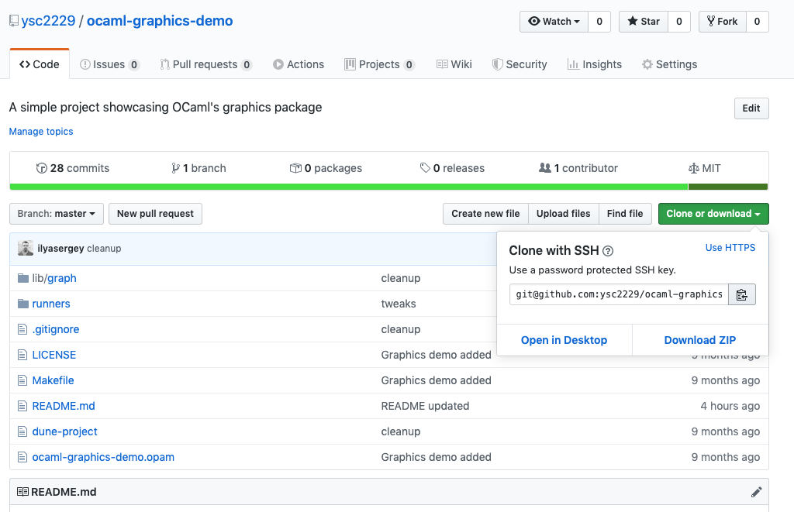
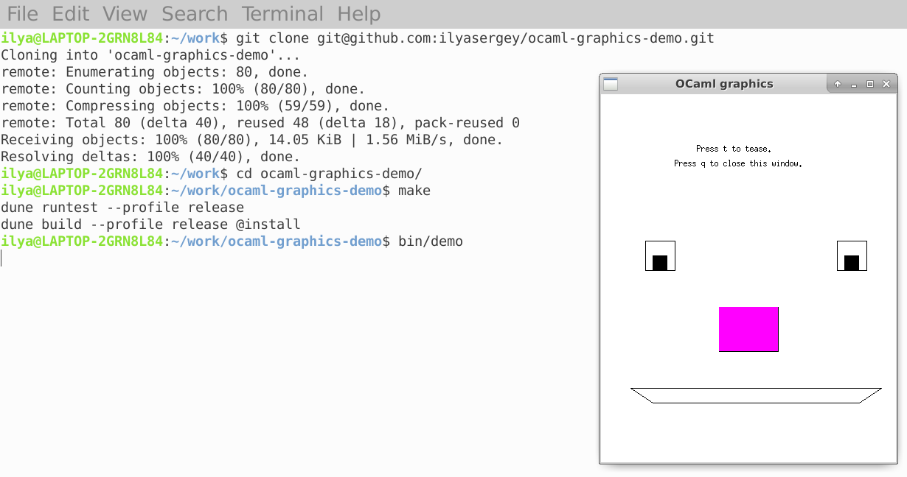

2.3. Checking your setup¶
To ensure that you’ve got all software installed correctly, let us retrieve, compile and run a small self-contained OCaml project.
2.3.1. Getting a project from Git¶
First, open this GitHub project:
Click “Clone or Download” button and choose “Use SSH” as a cloning option:
{kind=link}
Next, copy the url git@github.com:ysc2229/ocaml-graphics-demo.git to your buffer.
Switch to terminal in your WSL Linux or Mac OS system, and create a folder where you’ll be storing your OCaml projects. It might be ~/projects or ~/home/projects or whatever you prefer. You can do it as follows:
cd ~
mkdir projects
cd projects
Now run this command from the folder projects:
git clone git@github.com:ysc2229/ocaml-graphics-demo.git
cd ocaml-graphics-demo
If prompted to answer a question, simply answer y. We have just
created a local copy of the simple repository.
2.3.2. Compiling and running a project¶
Let’s compile it and run the executables. Execute the following commands:
make
bin/demo
After a few seconds (longer on macOS), you should get a window with a funny face. Feel free to play with it and close when done. You can also browse the sources of the project with Emacs.
{kind=link}
2.3.3. Running utop REPL¶
utop is a replacement for an inferior OCaml REPL providing a
richer set of features and a nicer highlighting. Unfortunately, it
cannot be used directly from Emacs with multi-file projects, but we
can run it from terminal. For instance, for the project above, we can
invoke utop by running:
make utop
Now we can load modules defined in the project (eg., GraphicsUtil)
and play with the definitions. Use Esc + Left/Right/Down arrows to
navigate between auto-completion options and choose one. An example is
shown in the screenshot below:
{kind=link}
Fun, isn’t it? Now you’re ready to take the class.